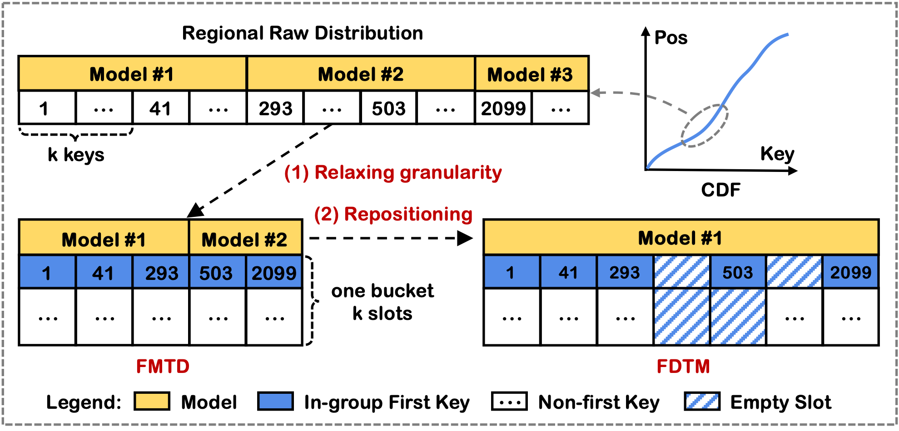
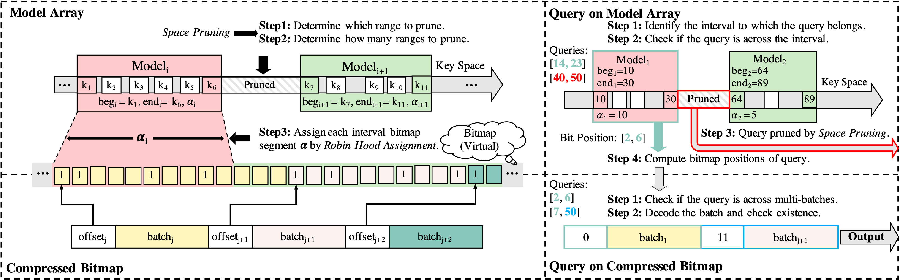
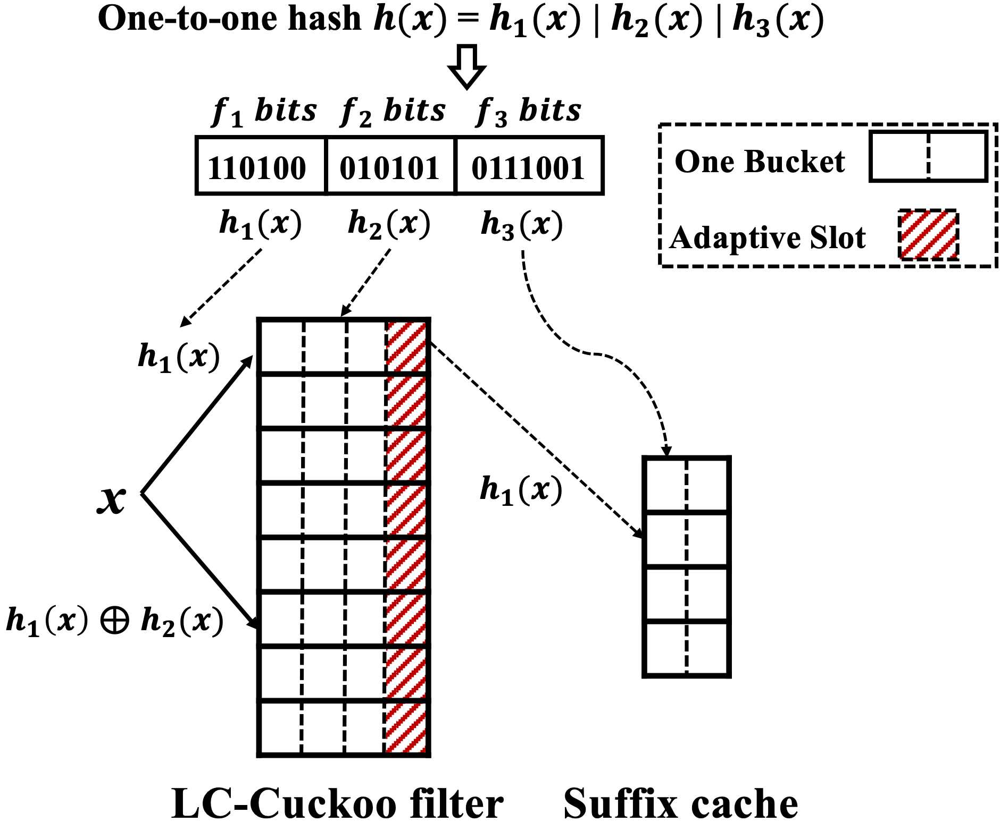
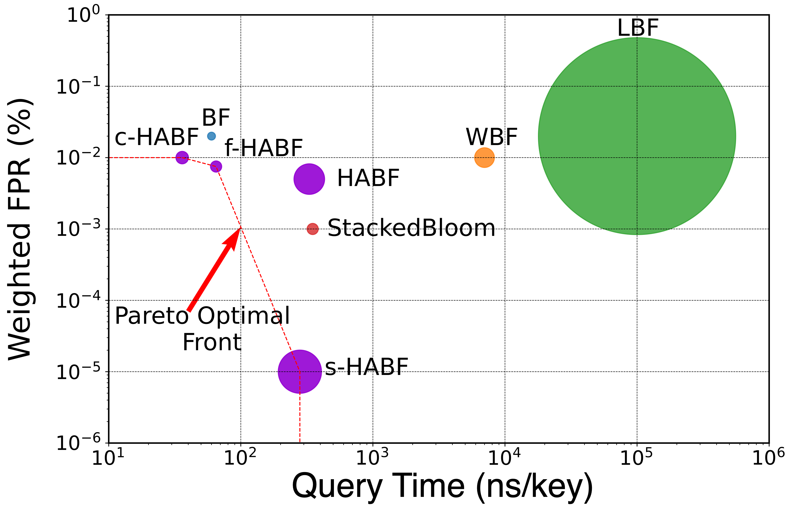

Meng Li (李 猛 in Chinese)
Assistant Researcher, LANDS Group
School of Computer Science
Nanjing University
Email: meng (at) nju (dot) edu (dot) cn
Office Room: CS Building 312.
Research Interests: Data-intensive and networked systems
More scalable: high-performance index and system 键值存储/数据库: SIGMOD25、VLDB24、VLDB23、ICDE22
More robust: system profiling and telemetry, Sketch, eBPF 系统可靠性测量: INFOCOM24、WWW22、ICDE21
More general: mitigating the gap between software and hardware. 软硬件协同设计：TKDE24、ICDM23
Pinned Notice：
课题组25年9月入学硕士尚有1个名额，欢迎联系.
日常实习生: Remote/Undergraduate research intern.
Benefits: 前沿课题，稳定国内外学术和产界合作; 氛围和谐，充足经费; 优先推荐实习和深造（参考往届学生）
Recent News：
- 10/2024. VEGA is accepted to SIGMOD 2025. - 08/2024. Received two funds from the Jiangsu and National Natural Science Foundations. - 06/2024. ACER is accepted to SIGKDD 2024. - 05/2024. VHCF is accepted to JOS 2024. - 04/2024. Bamboo filter Journal Version accepted to TON 2024. - 03/2024. I will serve as the program committee for CIKM’24. - 03/2024. Oasis is accepted to VLDB 2024.
Publicaions ( Selected ｜Full List )



